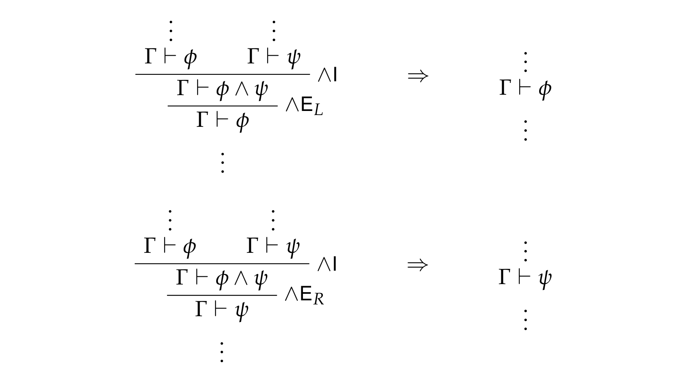
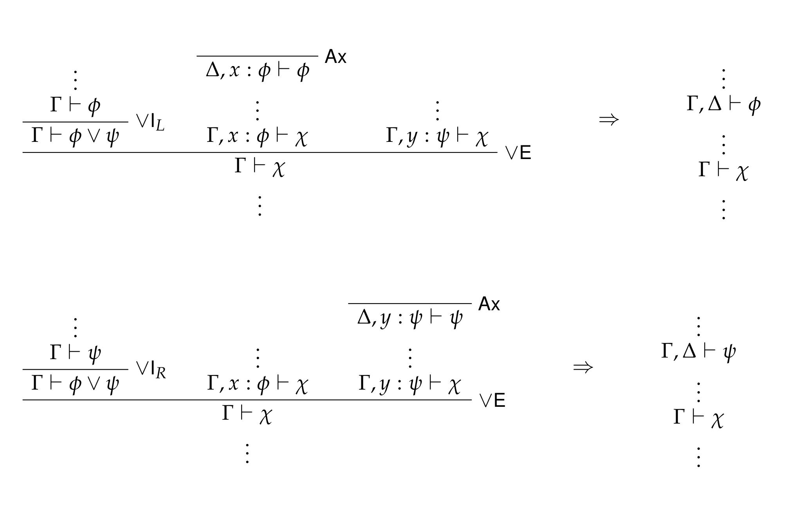
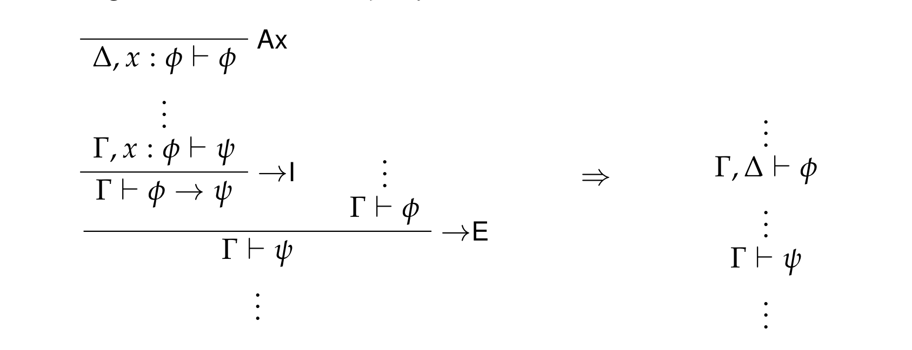

Propositional logic: local soundness and propositions as types
Table of Contents
1. Review
We've now covered the property of local soundness for those connectives of propositional logic having both introduction and elimination rules. In addition, we (finally!) got to the propositions-as-types (or ``Curry-Howard'') correspondence.
1.1. Local soundness
Recall that local completeness is the property of a connective that its elimination rules are strong enough for its introduction rules; i.e., no matter how you destruct the connective using the elimination rules, you can build it back up again.
Meanwhile, local soundness says that a connective's elimination rules are not too strong for its introduction rules. This is witnessed by showing that, every time you follow an introduction rule by an elimination rule, you're just introducing a proof detour that you can get rid of and still have a proof of the relevant formula. In other words, the elimination rules are never giving you anything new; they're just recycling old stuff.
The following detour-elimination schemata illustrate local soundness for \(∧\), \(∨\), and \(→\).
1.1.1. Conjunction rules

1.1.2. Disjunction rules

1.1.3. Implication rules

1.2. Propositions as types
One neat thing about the system of Intuitionistic Logic we've been studying is that every proof has a so-called normal form. That is, for any proof of a formula in IL, there is another proof of the same formula just like the original proof, but all of whose detours have been removed, following the schemata given above.
Importantly, if we take into account that proof detours can be eliminated, then our original encoding of propositional logic proofs can be viewed as an encoding of λ-calculus! In this case the proofs are the terms of the calculus, and the propositions are the types of those terms. Indeed, the elimination of detours, following local soundness, is known as β-reduction. Moreover, the result about Intuitionistic Logic above—that each proof has a normal form—translates into the result, for the different flavors of λ-calculus that we consider, that each term has a normal form (since terms are just proofs, after all).
From this new point of view, we can encode our old system of proofs again,
changing the names for things around a bit. Here, we consider only the system
of Minimal Logic; that is, which excludes the rule ContrElim.
-- Types (a.k.a. formulae) data Atom = P | Q | R -- Don't worry, we'll change these, haha. data Type = At Atom | Type :/\ Type -- Conjunctions | Type :\/ Type -- Disjunctions | Type :-> Type -- Implications | Taut -- Tautology | Contr -- Contradiction -- Contexts data Context = Empty | Cons Type Context -- Ways of being in a context data In (φ :: Type) (γ :: Context) where First :: In φ (Cons φ γ) Next :: In φ γ -> In φ (Cons ψ γ) -- Terms (a.k.a. proofs) data Term (γ :: Context) (φ :: Type) where Var :: In φ γ -> Term γ φ -- a.k.a. Ax Lam :: Term (Cons φ γ) ψ -> Term γ (φ :-> ψ) -- a.k.a. →I App :: Term γ (φ :-> ψ) -> Term γ φ -> Term γ ψ -- a.k.a. →E Pair :: Term γ φ -> Term γ ψ -> Term γ (φ :/\ ψ) -- a.k.a. ∧I Pi1 :: Term γ (φ :/\ ψ) -> Term γ φ -- a.k.a. ∧E_L Pi2 :: Term γ (φ :/\ ψ) -> Term γ ψ -- a.k.a. ∧E_R Unit :: Term γ Taut -- a.k.a. ⊤I Left :: Term γ φ -> Term γ (φ :\/ ψ) -- a.k.a. ∨I_L Right :: Term γ ψ -> Term γ (φ :\/ ψ) -- a.k.a. ∨I_R Case :: Term γ (φ :\/ ψ) -> Term (Cons φ γ) χ -> Term (Cons ψ γ) χ -> Term γ χ -- a.k.a. ∨E
What we would like to now do is define a function
normalForm :: Term γ φ -> Term γ φ
which takes any Term γ φ onto its β-normal form (and leave the term
unaffected in case it already is in β-normal form). To do this, we will need
ot define a general notion of substitution (just like we did for the untyped
λ-calculus). Here, our function subst will have the following definition:
subst :: forall γ δ ψ. (forall φ. In φ γ -> Term δ φ) -> Term γ ψ -> Term δ ψ subst f (Var i) = f i subst f (Lam t) = Lam (subst g t) where g :: forall φ χ. In φ (Cons χ γ) -> Term (Cons χ δ) φ g First = Var First g (Next i) = weaken (f i) subst f (App t u) = App (subst f t) (subst f u) subst f (Pair t u) = Pair (subst f t) (subst f u) subst f (Pi1 t) = Pi1 (subst f t) subst f (Pi2 t) = Pi2 (subst f t) subst f Unit = Unit subst f (Left t) = Left (subst f t) subst f (Right t) = Right (subst f t) subst f (Case t u v) = Case (subst f t) (subst g u) (subst h v) where g :: In φ (Cons χ1 γ) -> Term (Cons χ1 δ) φ g First = Var First g (Next i) = weaken (f i) h :: In φ (Cons χ2 γ) -> Term (Cons χ2 δ) φ h First = Var First h (Next i) = weaken (f i)
Note the use of the function weaken in the definitions of subst on Lam and
Case. It is necessary to weaken the contexts of terms that we substitute
underneath the variables bound by the Lam and Case constructors, both in
order to ensure type-correctness and (hence) to avoid the problem of variable
capture. Indeed, weaken is just one of our reordering operations:
weaken :: Term γ φ -> Term (Cons ψ γ) φ weaken = reorder Next
Recall the definition of reorder (though note that we've now changed the
names of the constructors):
reorder :: forall γ δ ψ. (forall φ. In φ γ -> In φ δ) -> Term γ ψ -> Term δ ψ reorder f (Var i) = Var (f i) reorder f (Lam t) = Lam (reorder g t) where g :: (forall χ. In χ (Cons φ γ) -> In χ (Cons φ δ)) g First = First g (Next i) = Next (f i) reorder f (App t u) = App (reorder f t) (reorder f u) reorder f (Pair t u) = Pair (reorder f t) (reorder f u) reorder f (Pi1 t) = Pi1 (reorder f t) reorder f (Pi2 t) = Pi2 (reorder f t) reorder f Unit = Unit reorder f (Left t) = Left (reorder f t) reorder f (Right t) = Right (reorder f t) reorder f (Case t u v) = Case (reorder f t) (reorder g u) (reorder h v) where g :: (forall χ. In χ (Cons φ1 γ) -> In χ (Cons φ1 δ)) g First = First g (Next i) = Next (f i) h :: (forall χ. In χ (Cons φ2 γ) -> In χ (Cons φ2 δ)) h First = First h (Next i) = Next (f i)
Now in terms of subst, we can define a function subst0, which substitutes the
axiom (i.e., variable) introducing the first assumption in any given context
by some proof (i.e., λ-term).
subst0 :: forall γ φ ψ. Term γ φ -> Term (Cons φ γ) ψ -> Term γ ψ subst0 t = subst f where f :: forall χ. In χ (Cons φ γ)-> Term γ χ f First = t f (Next i) = Var i
2. Exercise
Try to define the function normalForm. To start you off, here are the branches
of the definition corresponding to the simply-typed λ-calculus (a.k.a., the
implicational fragment of Intuitionistic Logic):
normalForm :: Term γ φ -> Term γ φ normalForm v@(Var _) = v -- Variables are already in normal form. normalForm (Lam t) = Lam (normalForm t) -- Abstractions are in normal form just in case their bodies are in normal form. normalForm (App t u) = case normalForm t of Lam t' -> normalForm (subst0 (normalForm u) t') -- If the normal form of t is an abstraction, then we need to substitute and further normalize. t' -> App t' (normalForm u) -- Otherwise, we just need to take the normal form of the argument. normalForm (Pair t u) = _ normalForm (Pi1 t) = _ normalForm (Pi2 t) = _ normalForm Unit = _ normalForm (Left t) = _ normalForm (Right t) = _ normalForm (Case t u v) = _